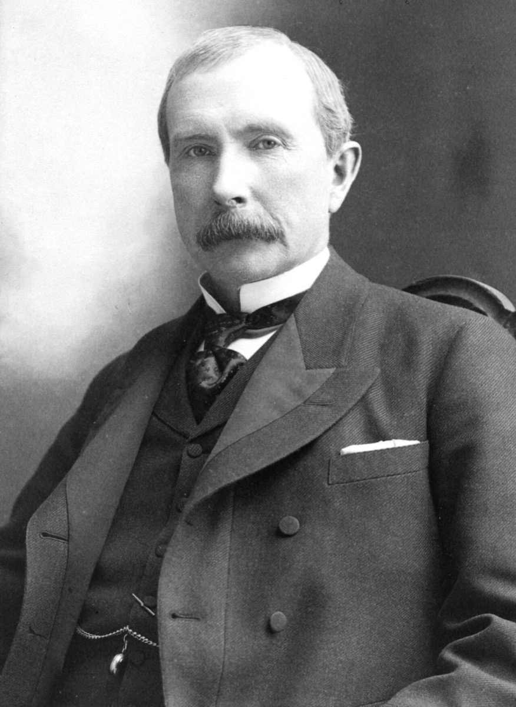
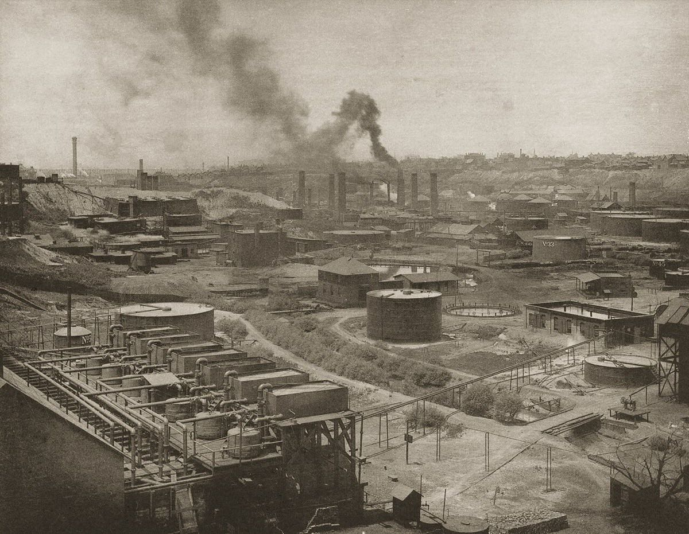
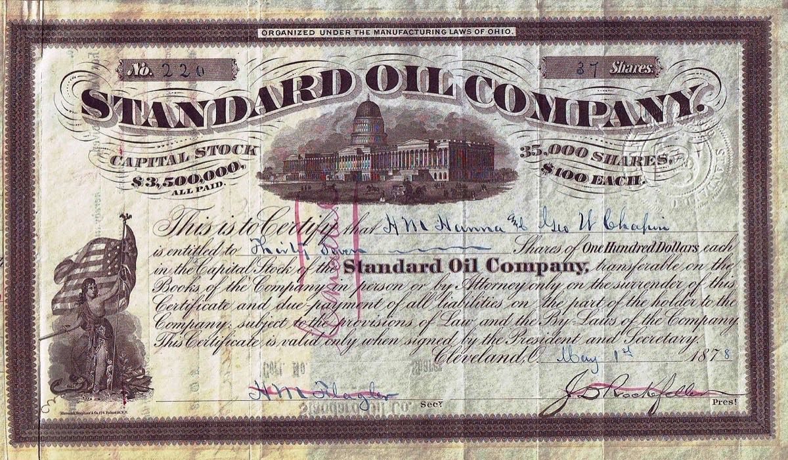
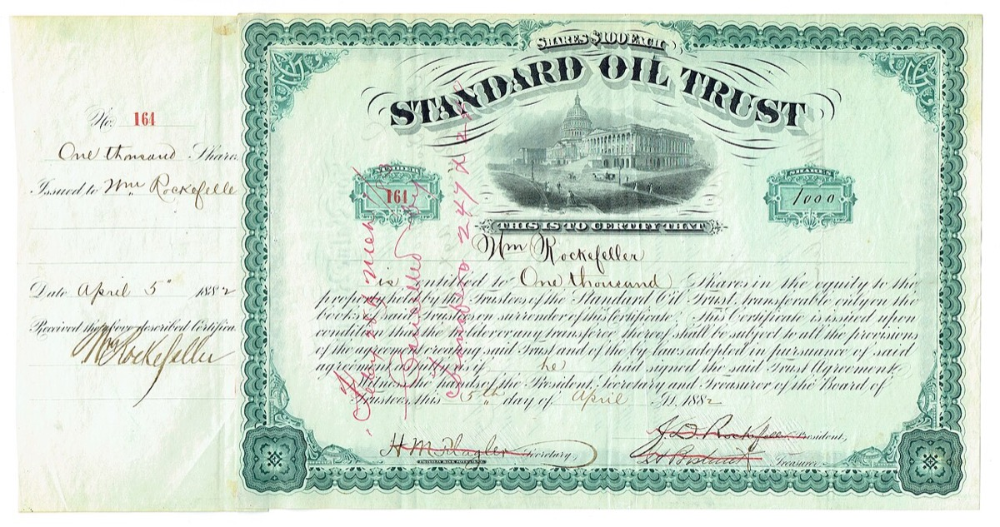
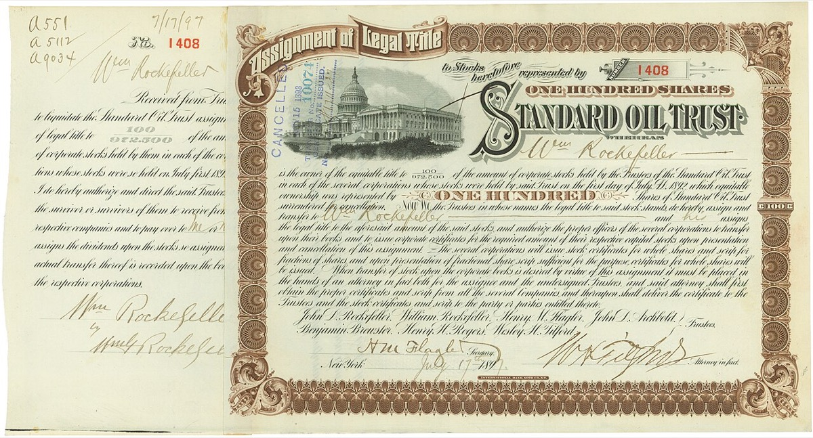
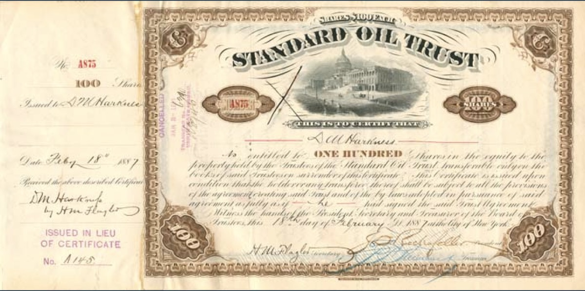
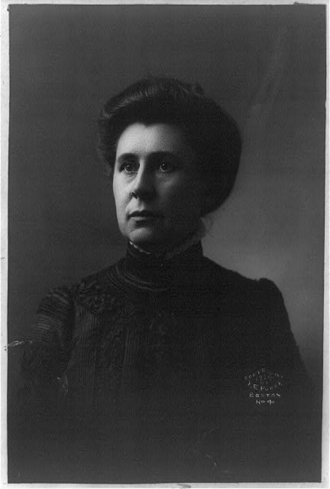
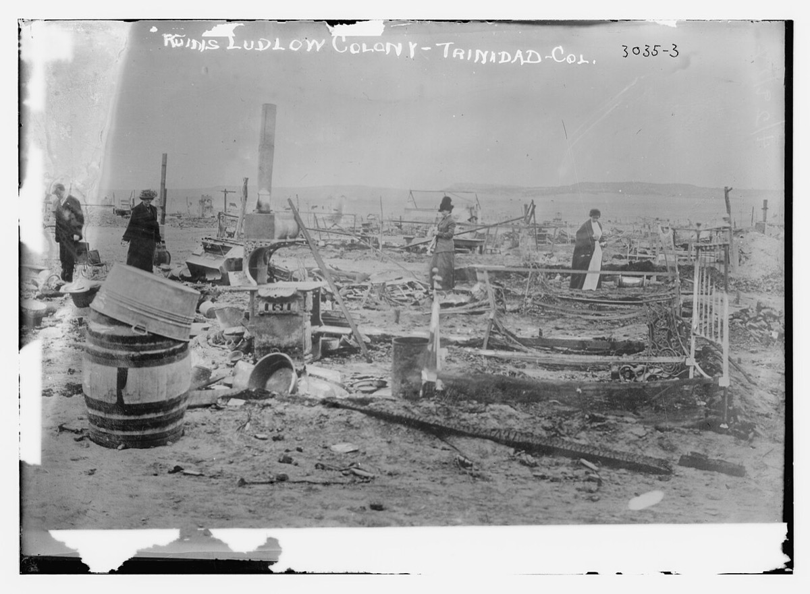

1911年の分割は法人を分けたが、判決は比例分配を禁じなかった。後継各社での比例保有継続は名簿が無いため判定不能である。Reksulak らは分割関連イベントで有意な異常リターンが無く、市場は救済策が効かないと予想したと結論する。純資産の約3倍は二次推計であり主張の中心には置かない。SIC失敗後、本人は垂直統合を選んだ。障壁の本体比較は判定不能である。
再作成日 2026年11月11日（初稿 2026年9月26日）。金額は当時の米ドル。現在価値への単純換算は行わない。括弧内に日本円の目安を添え、換算の方法は⑧節に示す。年表の満年齢は生年月日1839年7月8日からの年差。没後項目は年差で「没後N年」。当事者回想と告発は別節で並べ、どちらの章立てにも従わない。
1つ目。判決は比例分配を禁じなかった。後継各社での比例保有継続は名簿が無く判定不能である。連邦最高裁は Standard Oil Company of New Jersey の持株構造をシャーマン法違反とし、解体を命じた（221 U.S. 1、1911年5月15日）4。下級審判決は、親会社株主への株式の比例分配（ratably）を禁じていない25。Archive Center は分割時点の本人保有を発行済983,383株中244,500株と書くが、伝記の再掲であり一次株主名簿ではない3。法人の分割と持分の分散強制は別である。同一株主が各後継社で比例保有を続けたかは、後継社別名簿が無いため判定不能である。Reksulak らは代替説明を検定して棄却し、主要イベントで有意な異常リターンが無かったとして、市場は救済策が効かないと予想したと結論する（single-source・学術）6。純資産の約3倍は同論文の二次推計であり、主張の中心からは外す。
2つ目。SIC失敗後、本人は垂直統合の計画へ移った。障壁の「本体」比較は閉じない。South Improvement Company（SIC）は1872年に取引ゼロで特許取消となった9。本人は後年、失敗後に「我々の計画を試せ」と言える位置にいた、と語った（PBS引用）9。以後の本人側の積み上げは樽・パイプライン・タンク車・副産物の内部化である。二次系列では精製の単位コストは1870年の約3セント／ガロン（今の価値で約110円、米国の物価で換算）から1885年の0.452セント／ガロン（当時のレートで約0.0053円、今の物価で約33円）へ下がった。灯油価格は26セント（今の価値で約990円、米国の物価で換算）から8セント（当時のレートで約0.094円、今の物価で約580円）へ下がった2930。観測できるのは方針転換と同時低下である。独立系とのコスト差・参入退出・シェア推移が無いため、垂直統合が参入障壁の本体であるかは判定不能である。
3つ目。世論戦では複数回負けた。資産規模と評判は同じ方向に動かない。SIC、Tarbell 連載への沈黙、1914年のラドロー虐殺が並ぶ。ラドローでは Colorado Fuel and Iron（支配株主は息子 John D. Jr.）側で死者が出た。死者数は出典で割れる（諸説）1021。
読者と判断：ロックフェラー個人を評価するとき、まず判決が比例分配を禁じたか、分割時点の親会社保有が二次で追えるかを確認する。後継各社での比例保有継続は名簿が揃うまで判定不能のまま残す。分割の市場反応は Reksulak らのイベントスタディを読む。純資産の約3倍は二次推計として脇に置く。次に SIC 失敗後に本人がどの計画へ移ったかを確認する。
分解：物理的制約は原油の輸送距離と精製の歩留まり。お金の流れは公表運賃とリベートである。精製マージンと分割後各社の配当もここに入る。利得の帰属は本人と共同創業株主である。鉄道、独立系製油所、灯油の購買者も当事者になる。法と強制力は Sherman Act、州トラスト判決、比例割当を許す解体命令。時間は本人の計画転換（1872年）と訴訟期間（1906–11年）である。

主張2（SIC失敗後の方針転換）と主張1（比例割当と市場反応）の検証に使う日付を中心に並べた。各項目は事実、具体、なぜ効いたかの3層である。日付の右はその時点の満年齢である。
主張2が測るのは本人の意思決定である。SIC を制度として維持できたか。失敗後に秘密運賃同盟ではなく垂直統合を「我々の計画」としたか。同時期に単位コストと灯油価格が下がったか。垂直統合が参入障壁の本体であるかは、独立系比較が無いため判定不能のまま残す。
John Davison Rockefeller は1839年7月8日、ニューヨーク州リッチフォードに生まれた。1855年9月26日にクリーブランドの委託商 Hewitt & Tuttle へ簿記係として就職し、この日を生涯「Job Day」として記した1213。1859年に Maurice Clark と委託販売を始め、1863年に製油へ資本を入れた。1865年2月の内部競売で製油所を72,500ドル（今の価値で約2.3億円、米国の物価で換算）で落札した。金額は本人回想に残る12。
1870年1月10日、Standard Oil Company of Ohio を資本金100万ドル（今の価値で約38億円、米国の物価で換算）で設立した138。本人側の統合では樽の自製と貯蔵が先に入る。パイプラインとタンク車、購買の集中が続き、副産物（潤滑油・ワセリン・パラフィン）の商品化が重なる32。Armentano が引く二次系列では精製コストは1870年の約3セント／ガロン（今の価値で約110円、米国の物価で換算）から1885年の0.452セント／ガロン（当時のレートで約0.0053円、今の物価で約33円）へ下がった。灯油価格は26セント（今の価値で約990円、米国の物価で換算）から8セント（当時のレートで約0.094円、今の物価で約580円）へ下がった2930。価格表の一次は Tarbell の付録系である。コストの数字は Abels 経由である（single-source・二次）。本人経営期に価格と単位コストは同時に下がった。独立系の同時点コスト表は本ページ未取得である。

1871–72年、鉄道と大手精製業者のあいだで South Improvement Company が組まれた。公表運賃を引き上げたうえで、加盟業者には自己貨物へのリベートと、非加盟貨物へのドローバックを約束する契約草案が残る。任意の共通地点からNew Yorkまでの原油では1バレルあたり1.06ドル（当時のレートで約1.1円、今の物価で約8,200円）の例が表に載る14。
計画は漏洩し、産油地帯の抗議で鉄道が契約を破棄した。1872年4月、ペンシルベニア州議会が SIC の特許を取り消した。取引実績はゼロである9。PBS は同年2–3月の約6週間でクリーブランドの競合26社中22社を買収したと書く（single-source・報道）9。本人は後年、「発案者ではない」「失敗したら我々の計画を試せと言える位置にいた」と語った、と PBS が引用する9。観測命題は、SIC の制度失敗と、失敗後に垂直統合を「我々の計画」へ移す本人の方針である。Granitz & Klein 系は、運賃差が買収圧力になったと読む。Hovenkamp は、リベートの一部は鉄道側の費用節約で正当化できるが、全額の比例性は示せていないと書く31。リベートの寄与をゼロとは言わない。垂直統合が参入障壁の本体である、という因果比較は棄却も支持もできない。

本人回想は、競争を道徳問題ではなくコスト問題として書く。製油の歩留まりと副産物を一つの勘定で見る。運賃と在庫も同じ勘定に入る12。SIC 失敗後の「我々の計画を試せ」という発言は、秘密同盟より垂直統合を選ぶ宣言として判別できる9。
主張1が測るのは本人の所有結果と、分割への市場反応である。1911年の判決は法人を分けたか。同一株主が後継各社を比例保有する形を残したか。市場は救済策をどう読んだか。判決文言と分割時点の親会社株数だけでは、後継各社での比例保有継続は閉じない。純資産水準の推計は二次であり、主張の中心には置かない。
Tarbell は、1875年に始まった第2次協会が1年で精製能力の90%、1879年末までに95%を主張したと書く。以後も80%超を維持した、とも記す1。通説の「約90%」と Archive の1890年代石油事業約75%は算定定義が異なる（諸説）23。
1882年1月2日、Standard Oil Trust が成立した。Archive は当初資本を約7,000万ドル（当時のレートで約7,700万円、今の物価で約4,100億円）と書く。証明書保有者は42人、受託者は9人と書く3。1892年、オハイオ州最高裁がトラスト解散を命じる。名目上は解体し、実質は共通役員と持ち合いで継続した、と二次が一致する3。1899年、ニュージャージー州法を使い Standard Oil Company of New Jersey を持株会社に再編した。これが1911年判決の直接の対象になる4。


1906年11月、司法省がシャーマン法で提訴した。1911年5月15日、連邦最高裁が持株構造を違法とし解体を命じた（221 U.S. 1）45。1909年の下級審判決第5節は、親会社が子会社株式を議決・支配することを禁じる一方、「被告人らは、結合の当事者である被告法人の株式のうち、衡平上の権利に応じた分を、親会社株主へ比例的に分配することを、この判決によって禁じられない」と書く25。後継社数の数え方は「約34社」「38社」など表記が分かれる（諸説）38。
Archive は分割時点の本人保有を244,500／983,383株（約24.9%）と書く。同ページは伝記の再掲であり、一次株主名簿ではない3。二次整理では、Rockefeller は各後継社でもおおよそ同じ比率の持分を受けた、と書く。Digital History 教材は次のように要約する。1/4を持っていた者が各社の1/4を受けた。判決後まもなく株式価値が約2億ドル（当時のレートで約4.0億円、今の物価で約1.4兆円）増えた、とも書く（single-source・教材）32。
分割直後の競争は限定的だった、とする二次整理がある。後継社は旧来の販売地域を侵さない運用を続け、株式所有が拡散し経営者が交代するにつれて離れた、と記す教材がある32。1911年時点の精製シェアは60–65%へ既に下がっていた、とする整理もある27。判決が禁じたのは持株会社による支配であり、比例分配そのものではない。確認できるのは次の2点である。判決が比例分配を禁じないこと。分割時点の親会社株数の二次記載。同一株主が各後継社で比例保有を継続したかは、後継社別株主名簿が無いため判定不能である。
Reksulak, Shughart, Tollison, Basuchoudhary（2004）は、本人の個人資産が分割後に約3倍になったという二次推計を出発点に置く。検定した代替説明は次の3つである。ガソリン需要の拡大。非上場時代の過小評価。訴訟不確実性の解消。いずれも不十分だと判定する。分割関連の主要イベントについて、株主の統計的に有意な異常リターンは検出されなかった、とも書く。結論は「市場が政府の救済策を無効と予想したため反応しなかった」である（single-source・学術）6。因果命題「市場は分割を競争の即時復活とは読まなかった」は、この検定結果で部分支持できる。純資産の約3億ドル（当時のレートで約6.1億円、今の物価で約2.0兆円）から約9億ドル（当時のレートで約18億円、今の物価で約5.6兆円）という水準自体は一次の監査表ではなく二次推計である。主張の中心からは外し、脇の参考値として置く67。

出典6・7。棒は二次推計であり、一次の監査済み純資産表ではない。今の物価で1911年初は約2.0兆円、1913年末は約5.6兆円である（⑧節）。
単位コストと持分を時点付きで並べる。分割後資産と慈善も同じ表に置く。精製シェアは主張値と推定を分ける。因果命題に必要な系列は欠落として明示する。
| 項目 | 数値 | 日本円 | 時点・条件 |
|---|---|---|---|
| 製油所競売 | $72,500 | 今の価値で約2.3億円（米国の物価） | 1865-02。本人回想12 |
| Standard Oil Ohio 資本金 | $1,000,000 | 今の価値で約38億円（米国の物価） | 1870-01-10138 |
| 灯油価格 | 26→8¢/gal | 今の物価で約990円→約580円 | 1870→1885。二次（Tarbell系）2930 |
| 精製単位コスト | 約3→0.452¢/gal | 今の物価で約110円→約33円 | 1870→1885。Abels経由・二次29 |
| SIC リベート例 | $1.06 / barrel | 当時約1.1円・今の物価で約8,200円 | 任意の共通地点からNew Yorkまでの原油・草案14 |
| クリーブランド買収 | 26社中22社 | — | 1872年2–3月・約6週間9 |
| 精製能力シェア（Tarbell） | 90%→95% | — | 協会1年後→1879末の主張値1 |
| Trust 当初資本 | 約 $70M | 当時約7,700万円・今の物価で約4,100億円 | 1882。Archive3 |
| 分割時保有株 | 244,500 / 983,383 | — | 約24.9%。Archive（伝記再掲・一次名簿ではない）3 |
| 純資産（1911初） | 約 $300M | 当時約6.1億円・今の物価で約2.0兆円 | 二次推計・主張の中心外6 |
| 純資産（1913末） | 約 $900M | 当時約18億円・今の物価で約5.6兆円 | 二次推計・主張の中心外。GDP比約2.3%67 |
| シカゴ大学累計寄付 | 約 $35M | 今の物価で約2,400億〜2,600億円 | 1890以降18 |
| Foundation 初期移管 | $100M | 今の物価で約6,300億〜6,800億円 | 1913–14。年次報告20 |
| 生涯寄付（NYT） | $530,853,632 | 今の物価で約3.3兆〜3.8兆円 | 1855–193418 |
出典3・18・19・20。生涯総額は集計期間の差で諸説。今の物価でシカゴ累計は約2,400億〜2,600億円、財団初期は約6,300億〜6,800億円である。生涯NYTは約3.3兆〜3.8兆円、生涯Archiveは約3.4兆〜3.9兆円である（⑧節）。
主張1・2の観測命題の外側で、金額または時点が取れる負けと、判定不能の欠落データを置く。人格評価は書かない。
Ida M. Tarbell の The History of the Standard Oil Company は、McClure's Magazine に1902年11月から1904年10月まで19回連載され、1904年に単行本化した16。父はペンシルベニアの独立業者で、Standard の圧力で事業が潰れた、と本人が書く17。本人側の Random Reminiscences（1909）は Job Day と競売と寄付を中心に書く。SIC や Tarbell への逐条反論は薄い12。19回連載は全国世論を形成し、のちの連邦訴訟の空気を作った。金額としての損失は算定できない。政治的・評判上の敗北として置く。

提訴から最高裁判決まで約4年半。1899年の持株会社化は州トラスト判決への応答だったが、連邦シャーマン法の射程を抜けなかった4。財務結果としては株式価値が増えた。失敗として切るのは、独占の器としての持株会社を維持できなかった点である。判決は比例分配を禁じなかった。後継各社での比例保有継続は名簿が無く判定不能である（主張1）。
シカゴ大学には1890年の創設支援から累計約3,500万ドル（当時のレートで約4,300万〜7,100万円、今の物価で約2,400億〜2,600億円）を投じた、と二次整理が一致する183。1901年に Rockefeller Institute for Medical Research、1903年に General Education Board、1913年に Rockefeller Foundation を設立した。Foundation は1913年5月14日にニューヨーク州で認可され、1913–14年に合計1億ドル（当時のレートで約2.0億円、今の物価で約6,300億〜6,800億円）規模の証券を移管した（年次報告の書簡）1920。生涯寄付は NYT 集計で1855–1934年に530,853,632ドル（当時のレートで約11億〜18億円、今の物価で約3.3兆〜3.8兆円）である。Archive は約5億4,000万ドル（当時のレートで約11億〜18億円、今の物価で約3.4兆〜3.9兆円）と書く（諸説）183。寄付は財団・理事会・専門職員を持つ制度化として設計された20。
1913年9月からコロラド炭鉱ストライキが続く。CF&I の支配株主は息子 John D. Jr. である。1914年4月20日、州兵と会社側警備が Ludlow の天幕コロニーを攻撃し、火災と銃撃で死者が出た。死者数は「約20–25人（うち子ども11人）」「ストライキ全体で66人」など出典で割れる（諸説）1021。その後 Ivy Lee が広報を担い、1914年6月22日以降の紀要が始まる11。Tarbell 期の沈黙とラドロー後の Ivy Lee 起用は対照になる。前者は法廷リスク回避、後者は人命に触れた局面での物語介入である。本人（Sr.）は日常経営から退いていたが、一族名が当事者として固定された。1937年5月23日、フロリダで死去（97歳）3。

欠落データ。独立系製油所の同時点単位コスト表は未取得である。参入退出の年次系列と、ピーク期のシェアを運賃差だけで説明する識別表も未取得である。1872年クリーブランド買収の社名別・金額別の完全リストは未取得である。分割直後の後継社別株主名簿の突合表と、灯油価格の月次系列（1911前後）も、取得した公開一次では揃っていない。Archive は鉄鉱山・木材・製造・運輸など石油以外への投資があったと書くが、個別の損益表は未取得である（N/A）3。
日付と出典が特定できる発言に限った。主張2の方針転換と、慈善の制度化に必要な分量に絞る。
本文の主要な金額を、当時のレートの円と今の物価の円で並べる。給料で見た重みは、当時と今の初任給の比で示す。
| 本文の金額 | 年 | 当時のレートで円 | 今の物価で円 | 給料で見た重み | 意味 |
|---|---|---|---|---|---|
| 最初の月給 25ドル | 1856 | — | 約13万円（米国の物価） | 未算出 | 本人の最初の月給であり、以下の金額を本人の尺度で測る基準である。 |
| 製油所の落札額 72,500ドル | 1865 | — | 約2.3億円（米国の物価） | 未算出 | 1856年の本人の月給25ドルの2,900か月分（約240年分）に当たる。 |
| Standard Oil Ohio 資本金 100万ドル | 1870 | — | 約38億円（米国の物価） | 未算出 | 1859年の本人の出資2,000ドルの500倍である。 |
| SIC の運賃例 1.06ドル／バレル | 1872 | 約1.1円 | 約8,200円 | 未確認 | 1バレルあたりの額であり、買収圧力の大きさは輸送量を掛けるまで特定できない。 |
| Trust 当初資本 約7,000万ドル | 1882 | 約7,700万円 | 約4,100億円 | 約2.6兆円（巡査のみ） | 1870年の資本金の70倍であり、12年で所有の器が70倍になった。 |
| 純資産 約3億ドル（二次推計） | 1911 | 約6.1億円 | 約2.0兆円 | 約2.9兆〜8.7兆円 | 分割判決の時点の水準であり、主張の中心ではない参考値である。 |
| 分割後の株式価値の増加 約2億ドル | 1911 | 約4.0億円 | 約1.4兆円 | 約1.9兆〜5.8兆円 | 分割前の推計純資産3億ドルの約3分の2に当たる。 |
| 純資産 約9億ドル（二次推計） | 1913 | 約18億円 | 約5.6兆円 | 約8.1兆〜24兆円 | 1913年の米国GDP 395億ドルの約2.3%に当たる7。 |
| シカゴ大学への累計寄付 約3,500万ドル | 1890–1910 | 約4,300万〜7,100万円 | 約2,400億〜2,600億円 | 約3,400億〜1.1兆円 | 1913年末の推計純資産の約4%であり、単独の大学への寄付として最大の案件である。 |
| Foundation への初期移管 1億ドル | 1913–14 | 約2.0億円 | 約6,300億〜6,800億円 | 約8,700億〜2.7兆円 | 1913年末の推計純資産の約11%を1年余りで1つの財団へ移した。 |
| 生涯寄付（NYT集計） 530,853,632ドル | 1855–1934 | 約11億〜18億円 | 約3.3兆〜3.8兆円 | 約4.8兆〜14兆円 | 1913年末の推計純資産の約59%に当たる額を、生涯で寄付へ回した。 |
| 資産 10億ドル（通説） | 1916 | 約20億円 | 約6.7兆円 | 約8.0兆〜24兆円 | 1913年末の推計9億ドルから約1割増えた水準である。 |
給料で見た重みの幅は、大卒相当初任給の倍率による値を下限とし、巡査初任給の倍率による値を上限とする。1893年以前は大卒相当の系列が無いため、巡査初任給だけで示した。1872年は円ドル相場の年平均が無いため、新貨条例の金平価により1ドルを約1円とした。年に幅がある行は両端の年で計算した。生涯寄付は年を特定できないため、財団の設立年の1913年と集計年の1934年で計算した。
1871年以後の金額は、日本銀行の円ドル相場の年中平均で当時の円にし、総務省と日本銀行の消費者物価を接続した倍率で2025年の円にした333435。1870年以前は円の公定レートが無いため、ミネアポリス連銀の米国消費者物価で2025年のドルにし、2025年の年平均1ドル=149.6円で円にした36。給料で見た重みは、当時の大卒相当初任給と巡査初任給を2025年の大卒初任給262,300円と高卒初任給207,300円に置き換えた倍率で示した3839。物価倍率は品物の値段の変化だけを示し、賃金倍率は所得水準の上昇も含むため、明治・大正の金額では後者が前者の約1.4倍から6倍になる。明治・大正の高等官は同世代のごく一部であり、巡査との給与差が今の大卒と高卒の差より大きいため、1910年代の二つの賃金倍率の結果は約3倍異なる。
| 主体 | 得たもの | 失ったもの |
|---|---|---|
| 本人・共同創業株主 | 判決が比例分配を禁じなかったこと。市場が救済策無効を予想したとする検定結果（二次・学術）。後継各社での比例保有継続は名簿未取得 | 持株会社という単一の支配器。世論上の正当性 |
| 鉄道 | 安定輸送量（リベート交渉の対価） | SIC 公開後の契約破棄コスト |
| 独立系製油所 | SIC 特許取消（1872） | クリーブランド集中と長期のコスト劣位 |
| 灯油購買者 | 1870–85年の価格低下（26→8¢。今の物価で約990円→約580円） | 地域間の価格差・供給条件の不透明さ（告発側の主張） |
| 連邦政府・裁判所 | シャーマン法の適用先例（rule of reason） | 持分分散を命じなかった。比例保有継続の成否は名簿が無く判定不能 |

.jpg){kind=link}